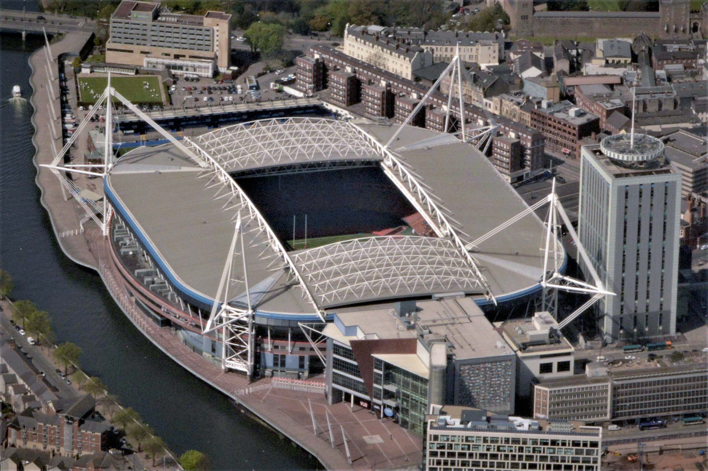
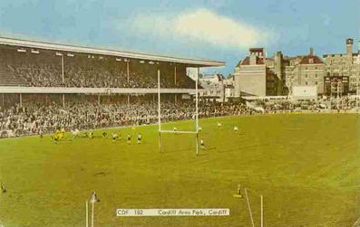
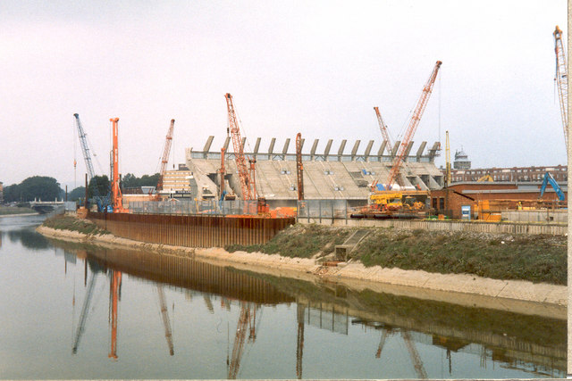
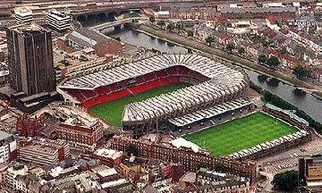

The Welsh national rugby is coached by Wayne Pivac and they play their home matches at
Principality Stadium in Cardiff. They currently rank at Number 6 in the World according to the IRB Rugby World Rankings.
Wales have competed in all Nine Rugby World Cups, with they're best result in 1987 where they finished third. They have
never managed to match that. They reached another Semi-Final in 2011 but were beaten by France who went on to the
Final. Wales were beaten by Australia and finished fourth. They matched this in 2019, making a Semi-Final but finishing
fourth to a defeat to New Zealand.

The Principality Stadium is their home gound, this was previously the Millennium Stadium. Like the Stade de France it is
a relatively new stadium and is the youngest of all the Six Nations Countries. It was planned in 1997 where construction
started and was planned to be ready for the 1999 Rugby World Cup. The Millennium Stadium opened in June 1999 and its first
major event was an international rugby union match on 26 June 1999, when Wales beat South Africa in a test match by 29–19
before a crowd of 29,000. With a total seating capacity of 73,931, it is the third-largest stadium in the Six Nations
Championship behind the Stade de France and Twickenham. It is also the second-largest stadium in the world with a fully
retractable roof and was the second stadium in Europe to have this feature. In 2015, the Welsh Rugby Union announced a
10-year sponsorship deal with the Principality Building Society that saw the stadium renamed as the "Principality Stadium"
from early 2016.
It is worth noting that before the Millennium Stadium, Wales played their matches at the Cardiff Arms Park. This was
originally a hotel called Cardiff Arms Hotel with parks dating back to 1803. The Arms Park soon became a popular place
for sporting events and by 1848, Cardiff Cricket Club was using the site for its cricket matches. In 1878 The Cardiff Arms
Hotel was demolished. It was then stated that the ground could only be used for "recreational purposes". At that time
Cardiff Arms Park had a cricket ground to the north and a rugby union ground to the south. 1881–2 saw the first stands for
spectators and had a capacity of 300 spectators. In 1890 new standing areas were constructed along the entire length of
the ground, with additional stands erected in 1896.

By 1912 the Cardiff Football Ground, as it was then known, had a new south stand and temporary stands on the north, east
and west ends of the ground. The south stand was covered, while the north terrace was initially without a roof. The
improvements were partly funded by the Welsh Rugby Union (WRU). The opening ceremony took place on 5 October 1912, with
a match between Newport RFC and Cardiff RFC. This new development increased the ground capacity to 43,000 and much improved
facilities at the ground compared to the earlier stands.
During 1934 the cricket pavilion had been demolished to make way for the new North Stand which was built on the rugby union
ground. In 1953 plans were made for a new South Stand. The new South Stand opened in 1956, in time for the 1958 British
Empire and Commonwealth Games. This brought the overall capacity of the Arms Park up to 60,000 spectators. The ground was
used for the athletics events, but this event caused damage to the drainage system, so much so, that other rugby unions
(England, Scotland and Ireland) complained after the Games about the state of the pitch. On 4 December 1960, due to
torrential rain, the River Taff burst its banks with the Arms Park pitch being left under 4 feet (1.2 m) of water. The
Development Committee was set up to resolve these issues on a permanent basis. They looked at various sites in Cardiff, but
they all proved to be unsatisfactory. They also could not agree a solution with the Cardiff Athletic Club, so they purchased
about 80 acres (320,000 m2) of land at Island Farm in Bridgend, which was previously used as a prisoner-of-war camp.
They couldn't find a suitable solution for planning permission so the scheme was abandoned in June 1964. At that stage,
the cricket ground to the north was still being used by Glamorgan County Cricket Club, and the rugby union ground to the
south was used by the national Wales team and Cardiff RFC.


After agreement from the Cardiff Athletic Club, the freehold of the south ground was transferred solely to the WRU in
July 1968. Work could then begin on the new National Stadium. The cricket ground to the north would be demolished and a new
rugby union stadium built for Cardiff RFC, who would move out of the south ground, allowing the National Stadium to be
built, for the sole use of the national rugby union team. Demolition of the National Stadium with only the North Stand
remaining, which would form part of the Millennium Stadium. On 17 October 1970, the new North Stand and the Cardiff RFC
ground was completed. The West Stand was opened in 1977 and the new East Terrace was completed by March 1980. By the time
the final South Stand had been completed and the stadium officially opened on 7 April 1984. The original capacity was
65,000 but this had to be reduced in later years to 53,000 for safety reasons. 11,000 of these were on the East Terrace and
the conversion to all-seater stadium would have reduced the stadium capacity still further to 47,500.
In 1997, just thirteen years after the National Stadium had opened it was considered too small and did not have the
facilities required of the time and it was demolished and a new stadium, the Millennium Stadium, was built in its place
(completed to a north-south alignment and opened in June 1999).